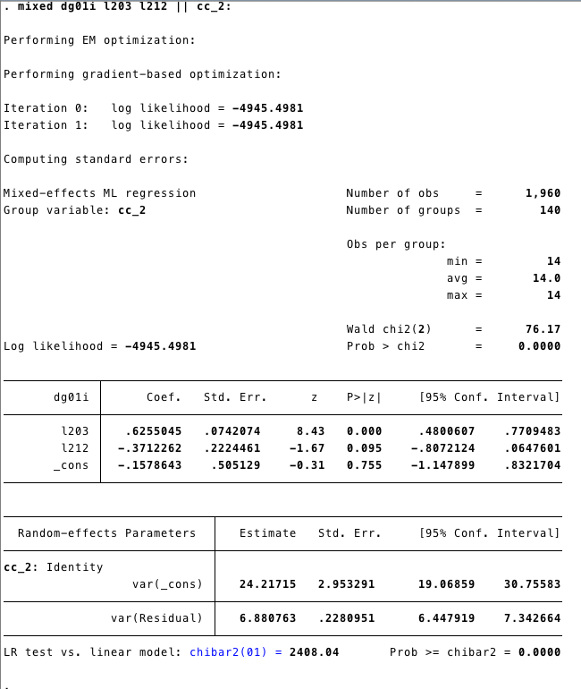
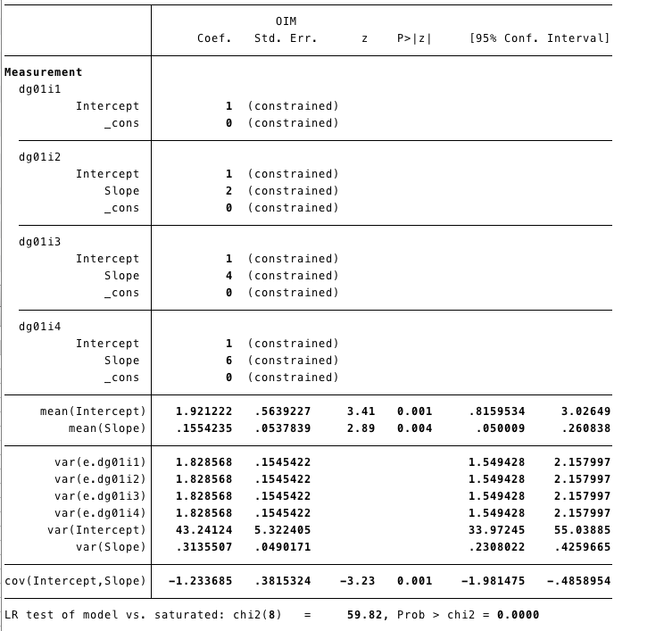
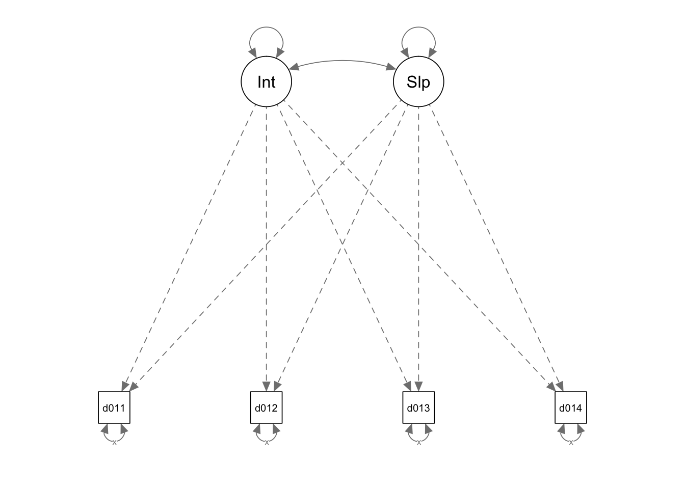

Multilevel Models
1 Econometric Multilevel Models
Multilevel models take into account the nested data’s structure, where there are data at different levels of aggregation.
1.1 Random Intercept
A multilevel model for the intercept can be represented as:
\[ Y_{it}=\beta_{0}+\beta_{1}X_{1it}..+ e_{it} \]
Second Level:
\[ \beta_0= \beta_{00}+ \beta_1*X_1+... \zeta_{0i} \]
Where the intercept does not have any independent variable, the “mixed” form can be represented as:
\[ Y_{it}=\beta_{00}+\beta_{1}X_{1it}..+\zeta_{0i}+ e_{it} \]
Which is the same as the Random Effect Model we explained in the econometric section here
Lets work in STATA:
1.1.1 STATA
The model:
- We are going to use the dataset XXXX.
- The model is:
\[ Y_{it}=\beta_{00}+\beta_1*l203_{it}+\beta_2*l2020_{it}+\zeta_i+\epsilon_i \]
- In this case, we are using the variable l203 and l212 as predictors of the intercept at the second level.
- \(\beta_1\) and \(\beta_2\) are the fixed effect part of the model. - \(\zeta_i+\epsilon_i\) are the random effects
- The command mixed (is for mixed models)
Output:

1.1.2 R
For mixed models, we will use the function
lmerfrom the package lm4In this case, the model seems similar to what we have done before. The “fixed effect part” comes first
dg01i~l203+l212and we add the random effect(1|cc_2)for the intercept.
## Linear mixed model fit by REML ['lmerMod']
## Formula: dg01i ~ l203 + l212 + (1 | cc_2)
## Data: demo
##
## REML criterion at convergence: 9895.4
##
## Scaled residuals:
## Min 1Q Median 3Q Max
## -4.7159 -0.1491 0.0249 0.3051 3.8787
##
## Random effects:
## Groups Name Variance Std.Dev.
## cc_2 (Intercept) 24.758 4.976
## Residual 6.881 2.623
## Number of obs: 1960, groups: cc_2, 140
##
## Fixed effects:
## Estimate Std. Error t value
## (Intercept) -0.15786 0.51063 -0.309
## l203 0.62550 0.07502 8.338
## l212 -0.37123 0.22487 -1.651
##
## Correlation of Fixed Effects:
## (Intr) l203
## l203 -0.526
## l212 -0.215 0.070We get the same output as STATA.
1.2 Random Slope
We can add the a random effect to the l2020’s slope as well. The mixed model would be represented as:
\[ Y_{it}=\beta_{00}+\beta_1*l203_{it}+\beta_2*l2020_{it}+\zeta_{it}+\epsilon_i+ \zeta_{1it}*l2020 \]

1.2.2 R
- We add the random effect to the intercept pf l212
## boundary (singular) fit: see ?isSingular## Linear mixed model fit by REML ['lmerMod']
## Formula: dg01i ~ l203 + l212 + ((1 | cc_2) + (0 + l212 | cc_2))
## Data: demo
##
## REML criterion at convergence: 9895.4
##
## Scaled residuals:
## Min 1Q Median 3Q Max
## -4.7159 -0.1491 0.0249 0.3051 3.8787
##
## Random effects:
## Groups Name Variance Std.Dev.
## cc_2 (Intercept) 24.758 4.976
## cc_2.1 l212 0.000 0.000
## Residual 6.881 2.623
## Number of obs: 1960, groups: cc_2, 140
##
## Fixed effects:
## Estimate Std. Error t value
## (Intercept) -0.15786 0.51063 -0.309
## l203 0.62550 0.07502 8.338
## l212 -0.37123 0.22487 -1.651
##
## Correlation of Fixed Effects:
## (Intr) l203
## l203 -0.526
## l212 -0.215 0.070
## convergence code: 0
## boundary (singular) fit: see ?isSingular1.3 Growth Models
A growth model it is a especial type of multilevel model where time is an independent variable.
\[ Y_{it}= \beta_0+ \beta_1*Time+e_{it} \]
Second Level \[ \beta_0=\beta_{00}+\beta_{01}*l203+\beta_{02}*l225+\beta_{03}*l212+\zeta_{00} \] slope: \[ \beta_1=\beta_{10}+\beta_{11}*l203+\beta_{12}*l225+\zeta_{11} \]
Mixed model
\[ Y_{it}=\beta_{00}+\beta_{01}*l203+\beta_{02}*l225+\beta_{03}*l212+ \beta_{10}*TIME+\beta_{11}*l203*TIME+\beta_{12}*l225*TIME+\zeta_{11}*Time+\zeta_{00}+e_{it} \]
1.3.1 STATA
- To estimate the model above in STATA:
- First, we need to standardize the variable TIME
- Then, we need to construct the interaction terms
- Finally we run the mixed model
Output

1.3.2 R
- First we create the variable `
yearnum2that recodes the yearnum so there is a zero point at the beginning of the series.
- We don’t need to create the interaction variables. We can add the interaction straight to the model
l203*yearnum2+ l225*yearnum2.
m3<-lmer(dg01i~yearnum2+l203+l221+l225+l212+l203*yearnum2+
l225*yearnum2+
(1|cc_2)+(1|yearnum2) , data=demo)output
## Linear mixed model fit by REML ['lmerMod']
## Formula: dg01i ~ yearnum2 + l203 + l221 + l225 + l212 + l203 * yearnum2 +
## l225 * yearnum2 + (1 | cc_2) + (1 | yearnum2)
## Data: demo
##
## REML criterion at convergence: 9601.9
##
## Scaled residuals:
## Min 1Q Median 3Q Max
## -4.7721 -0.3134 0.0034 0.3699 4.8344
##
## Random effects:
## Groups Name Variance Std.Dev.
## cc_2 (Intercept) 24.8275 4.9827
## yearnum2 (Intercept) 0.1414 0.3761
## Residual 5.7473 2.3974
## Number of obs: 1960, groups: cc_2, 140; yearnum2, 14
##
## Fixed effects:
## Estimate Std. Error t value
## (Intercept) 0.757051 1.197770 0.632
## yearnum2 0.090611 0.039741 2.280
## l203 0.722524 0.078487 9.206
## l221 -0.076439 0.084964 -0.900
## l225 -4.586000 1.797186 -2.552
## l212 -0.382498 0.225583 -1.696
## yearnum2:l203 -0.015219 0.002396 -6.351
## yearnum2:l225 0.345300 0.053519 6.452
##
## Correlation of Fixed Effects:
## (Intr) yernm2 l203 l221 l225 l212 y2:203
## yearnum2 -0.216
## l203 -0.249 0.062
## l221 -0.523 0.000 -0.159
## l225 -0.832 0.130 0.103 0.276
## l212 -0.119 0.000 0.051 0.080 0.004
## yernm2:l203 0.067 -0.310 -0.198 0.000 -0.030 0.000
## yernm2:l225 0.144 -0.670 -0.031 0.000 -0.194 0.000 0.156- The model has three random effects and eight fixed effects.
2 SEM Multilevel Models
Here we are going to estimate a Latent Growth Model using the SEM framework.
2.1 STATA
This model has a random effect for the intercept and the slope.

For this model we are going to use the data XXXX in its wide format.
sem (dg01i1 <- _cons@0, ) (dg01i2 <- _cons@0, ) (dg01i3 <- _cons@0, )
(dg01i4 <- _cons@0, ) (Intercept@1 -> dg01i1, ) (Intercept@1 -> dg01i2, ) (Intercept@1 -> dg01i3, ) (Intercept@1 -> dg01i4, ) (Slope@0 -> dg01i1, ) (Slope@2 -> dg01i2, ) (Slope@4 -> dg01i3, ) (Slope@6 -> dg01i4, ), covstruct(_lexogenous, diagonal) latent(Intercept Slope ) cov( e.dg01i1@var e.dg01i2@var e.dg01i3@var e.dg01i4@var Intercept*Slope) means( Intercept Slope) nocapslatent
2.2 R
semG<-
'
## Latents
Intercept=~1*dg01i1+1*dg01i2+1*dg01i3+1*dg01i4
Slope=~1*dg01i1+2*dg01i2+4*dg01i3+6*dg01i4
## Covariance
Intercept~~Slope
## Covariance
## Fixing variance
dg01i1~~x*dg01i1
dg01i2~~x*dg01i2
dg01i3~~x*dg01i3
dg01i4~~x*dg01i4
'## lavaan 0.6-3 ended normally after 37 iterations
##
## Optimization method NLMINB
## Number of free parameters 7
## Number of equality constraints 3
##
## Number of observations 140
##
## Estimator ML
## Model Fit Test Statistic 53.896
## Degrees of freedom 6
## P-value (Chi-square) 0.000
##
## Parameter Estimates:
##
## Information Expected
## Information saturated (h1) model Structured
## Standard Errors Standard
##
## Latent Variables:
## Estimate Std.Err z-value P(>|z|)
## Intercept =~
## dg01i1 1.000
## dg01i2 1.000
## dg01i3 1.000
## dg01i4 1.000
## Slope =~
## dg01i1 1.000
## dg01i2 2.000
## dg01i3 4.000
## dg01i4 6.000
##
## Covariances:
## Estimate Std.Err z-value P(>|z|)
## Intercept ~~
## Slope -1.739 0.468 -3.713 0.000
##
## Variances:
## Estimate Std.Err z-value P(>|z|)
## .dg01i1 (x) 1.786 0.151 11.832 0.000
## .dg01i2 (x) 1.786 0.151 11.832 0.000
## .dg01i3 (x) 1.786 0.151 11.832 0.000
## .dg01i4 (x) 1.786 0.151 11.832 0.000
## Intercept 45.430 5.638 8.058 0.000
## Slope 0.430 0.067 6.452 0.000